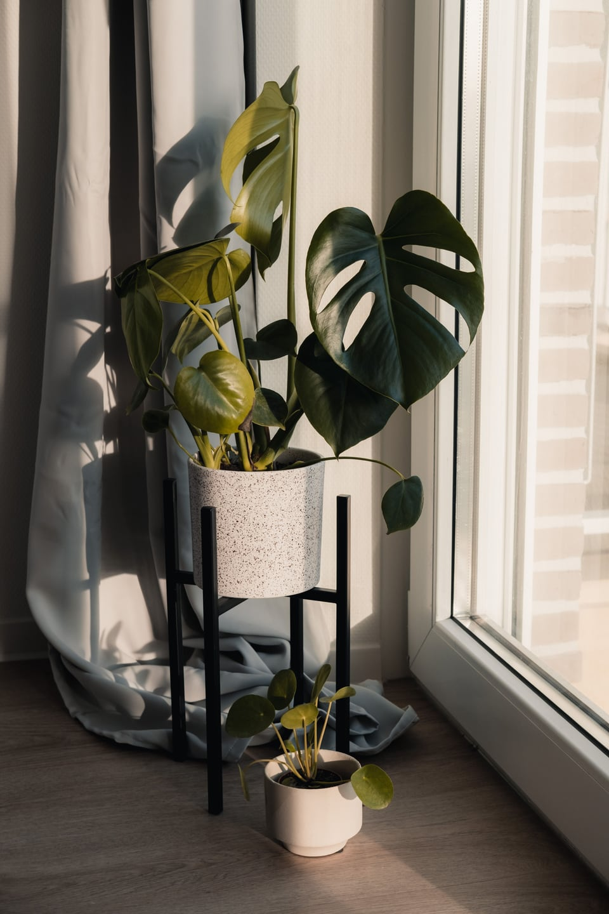
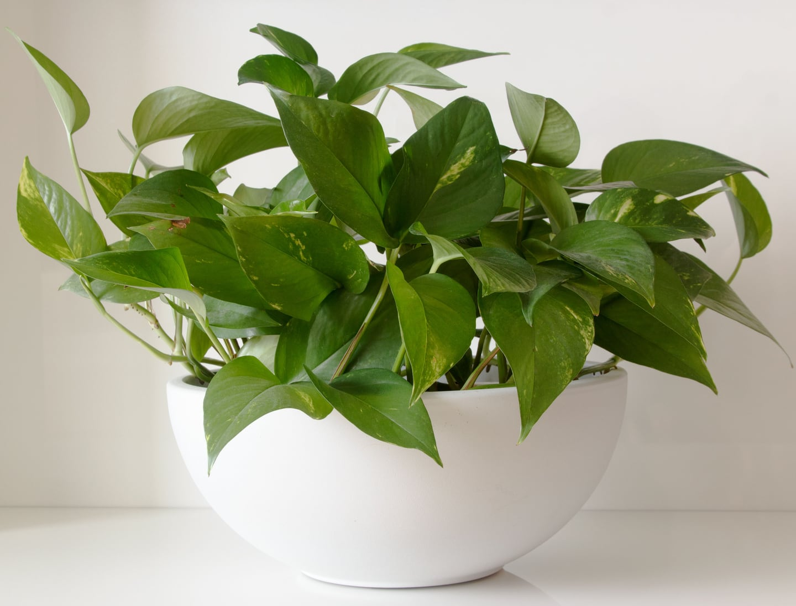
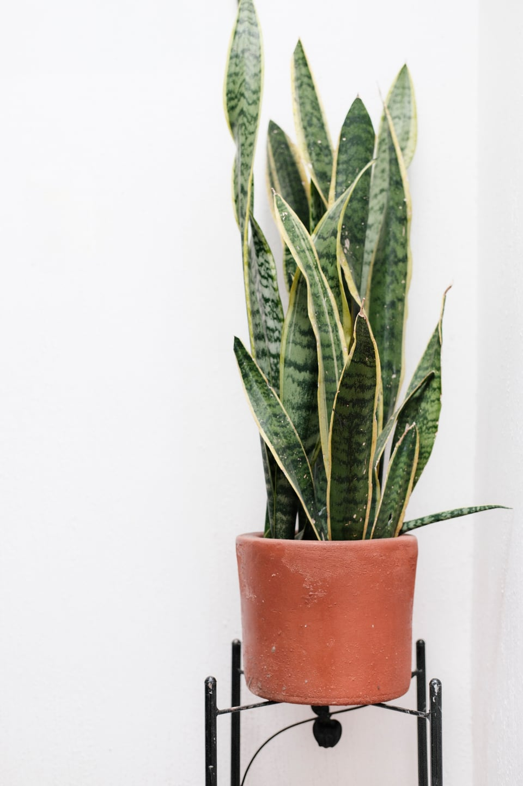
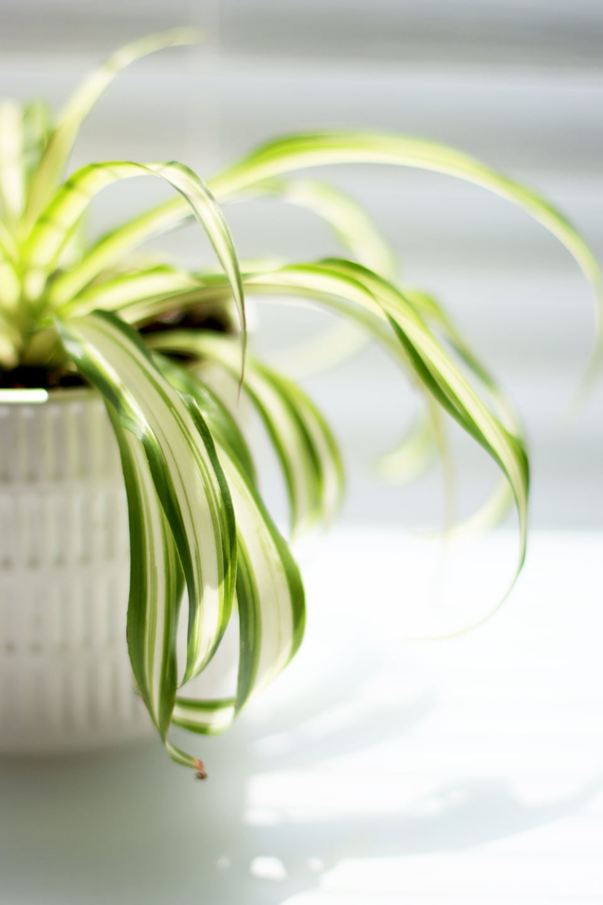
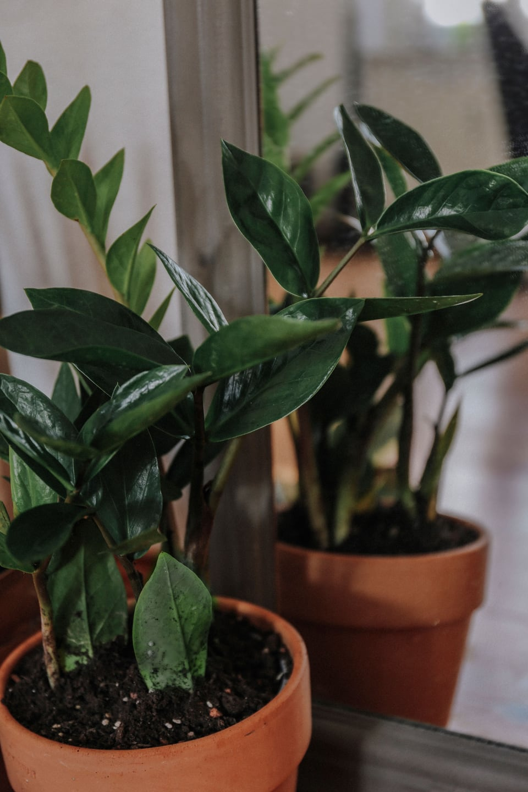

Laura / Pexels ↗Монстера
Лучше растёт при ярком рассеянном свете. Прямое полуденное солнце может обжечь листья.
Поливайте, когда верхняя треть грунта подсохнет. Растение токсично для кошек и собак.
3 290 ₽ цена макета
Подбор по освещению
Яркий свет, полутень или северное окно — начните с места, где будет стоять растение.
Подобрать по светуОцените свет у окна — выбор станет проще.

Подбор начинается здесь
Выберите освещение — в каталоге останутся растения, которым оно подходит.
Тень — не темнота: рядом с растением всё равно нужен дневной свет.
Подборка для дома
Пять растений с разными требованиями к свету и поливу.
Показаны все растения

Laura / Pexels ↗Лучше растёт при ярком рассеянном свете. Прямое полуденное солнце может обжечь листья.
Поливайте, когда верхняя треть грунта подсохнет. Растение токсично для кошек и собак.
3 290 ₽ цена макета

Aleksander Dumała / Pexels ↗Лиану можно поставить на полку или в подвесное кашпо. Она переносит слабый свет, но при рассеянном растёт активнее.
Дайте грунту просохнуть между поливами. Потос токсичен при проглатывании.
1 490 ₽ цена макета

Brunxs / Pexels ↗Переносит слабое освещение, но хорошо растёт и при ярком рассеянном свете.
Поливайте после полного просыхания грунта. Держите подальше от кошек и собак.
2 190 ₽ цена макета

Amelia Cui / Pexels ↗Хлорофитум переносит разный уровень освещения. Берегите листья от прямого солнца.
Не оставляйте почву надолго сухой или переувлажнённой. ASPCA считает хлорофитум нетоксичным для кошек и собак.
1 290 ₽ цена макета

Valeria Palesska / Pexels ↗Хорошо переносит слабое освещение, если в комнате есть дневной свет.
Между поливами дайте грунту полностью просохнуть. Сок растения может быть вреден при проглатывании.
2 790 ₽ цена макета
В подборке нет растений для этих условий. Попробуйте выбрать другой уровень света.
Даже теневыносливым нужен свет
Сансевиерия и замиокулькас легче других переносят слабое освещение, но им тоже нужен дневной свет. Если в выбранном месте днём темно, поставьте растение ближе к окну.